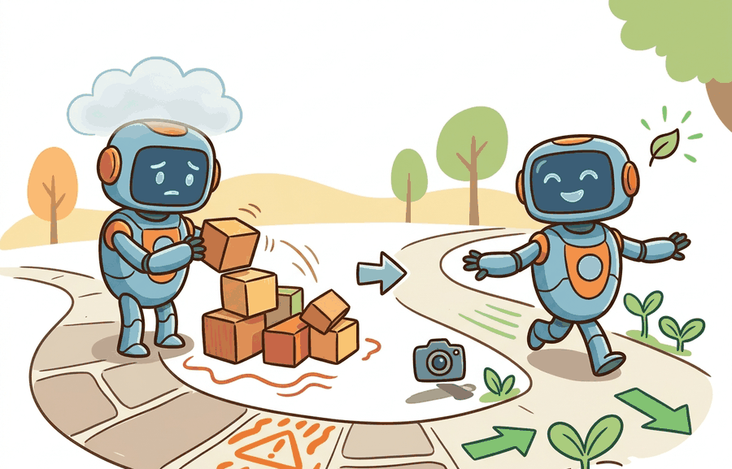

A safety constraint is useful only when violation margin and duration are logged.
A Safety-Critical Controls Researcher
Learning in the physical world cannot treat collisions, dangerous forces, or boundary crossings as just another negative reward sample. Safe exploration introduces hard or probabilistic limits that the learner must respect while still gathering information.

Why This Matters
Constraint violations and safe exploration sits at the boundary between learning and safety engineering. The question is not whether the policy usually behaves well, but whether dangerous states are detected, blocked, or exited fast enough to protect people, equipment, and mission goals.
A constrained Markov decision process writes the objective as $$\max_\pi J_R(\pi) \quad \text{subject to} \quad J_{C_k}(\pi) \le d_k, \; k=1,\dots,K,$$ where each $J_{C_k}$ is an expected safety cost and $d_k$ is the allowed budget.
If violations are genuinely unacceptable, they cannot be left to the optimizer to trade away implicitly. They need explicit budgets, shields, or action filters.
Three algorithm families address this in practice. Lagrangian relaxation methods (used in Constrained Policy Optimization, or CPO, by Achiam et al. 2017) add a multiplier per constraint and update it alongside the policy; they work well when violations are rare but can oscillate when budgets are tight. Projection-based methods filter the chosen action through a convex quadratic program at each step: the action is accepted if it satisfies all constraints and projected to the nearest safe action otherwise. This is fast enough for real-time control on robotic arms (Franka Emika Panda runs at 1 kHz) but requires a differentiable constraint model. Model-based safe RL (as in Conservative Safety Critics, Yu et al. 2022) learns a safety critic offline and uses it to veto rollouts before they execute on hardware, keeping physical violations near zero during the early training phase when the policy is most erratic. Choose Lagrangian methods when you can tolerate a small budget overrun during convergence; choose projection or model-based shields when any physical violation is unacceptable.
- Define safety costs and hard constraints separately from task reward.
- Set allowable budgets or zero-tolerance rules before data collection.
- Choose the intervention layer: supervisor, safety filter, human operator, or reset routine.
- Log every exploratory violation attempt, even if the supervisor blocks it.
- Use postmortems to refine the safe set rather than only penalizing the agent numerically.
Worked Example
A mobile manipulator learning to reach around clutter may need to try unfamiliar approaches, but it should not be allowed to ram a shelf just because the reward eventually penalizes contact.
trajectory = [
{"state": "nominal", "safety_cost": 0.0},
{"state": "near_boundary", "safety_cost": 0.4},
{"state": "blocked_by_filter", "safety_cost": 1.0},
]
budget = 1.0
used = sum(step["safety_cost"] for step in trajectory)
print({"budget": budget, "used": used, "within_budget": used <= budget}){'budget': 1.0, 'used': 1.4, 'within_budget': False}Expected output: The trajectory exceeds the exploration safety budget. In a real system that should trigger supervisor action, tighter reset policy, or the end of the current training run.
Constrained RL libraries, safety wrappers, and supervisor nodes help enforce budgets and log blocked actions. The value is not only algorithmic, it is that every blocked action becomes inspectable evidence.
Safe exploration turns constraints into measured margins. cvxpy and OSQP can implement small action filters, hazard logs define forbidden states, ROS 2 lifecycle nodes decide when learning yields authority, and the experiment table records both reward and constraint violation duration.
Safe exploration should be understood as allocation of risk during learning. Even when a violation is blocked, the attempted violation still teaches you where the current policy wants to go and where the safe set may be underspecified.
The section's artifact is a paired exploration ledger: proposed action, filtered action, active constraint, margin, intervention source, and final task outcome. That ledger shows whether safety reduced risk or merely hid failures.
The main failure is to turn a hard safety requirement into a soft reward penalty because that makes the optimizer appear simpler. In physical systems, the simplicity is fake and the risk is real.
Cross-References
This section leads naturally to Section 54.3 on barrier functions and Section 54.4 on shielded policies, where constraints gain direct action-level enforcement.
Wrap one exploration policy with a safety budget and a blocking rule. Log every attempted unsafe action and compare the nominal learning curve to the blocked-action trace.
Do not report safe exploration results without the blocked-attempt statistics. A method that looks safe only because a supervisor silently intercepted many dangerous actions is telling an incomplete story if the interceptions are hidden.
For drones, safe exploration may mean geofence and velocity envelopes during policy learning. For humanoids, it may mean fall-risk constraints and torque or joint-rate limits.
Open problems include scalable constrained RL for contact-rich tasks, better online safe-set expansion, and principled use of human teleoperators inside exploration loops.
Can you distinguish a safety budget, a hard constraint, and a blocked action event in your logs? If not, your exploration evidence is probably too coarse.
Safe exploration means learning under explicit risk controls. Violations are evidence to analyze, not acceptable tuition fees.
Design a CMDP-style formulation for one embodied learning problem. Name the reward, at least two safety costs, one hard limit, and the supervisor that would enforce it.
Treating every constraint violation as "negative reward" during learning is like teaching a new driver by charging them five cents per pedestrian. Technically a signal, but not the right architecture.
Section References
García, J., and Fernández, F. "A Comprehensive Survey on Safe Reinforcement Learning." (2015). https://jmlr.org/papers/v16/garcia15a.html
A broad survey framing constrained learning problems.
Wabersich, K. P. et al. "Safe Reinforcement Learning Using Probabilistic Shields." (2023). https://arxiv.org/abs/2210.00746
A modern perspective on guarding exploration with explicit safety layers.
Section 54.3 moves from constrained objectives to explicit safe-set enforcement with control barrier functions and reachability methods.